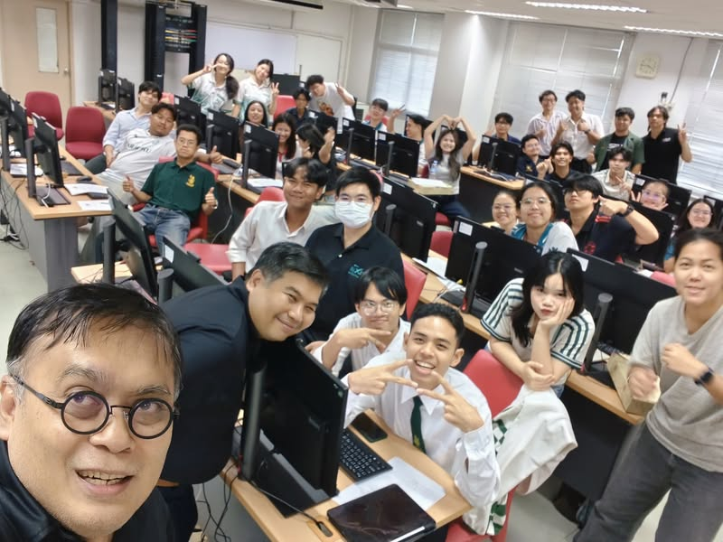

เมื่อห้องเรียนรัฐศาสตร์ทดลองประชาธิปไตยด้วย Decidim
{kind=link}

นี่เป็นครั้งแรกที่ผมได้บรรยายให้นิสิตรัฐศาสตร์ มก. โดยชวนกันทดลองว่าแพลตฟอร์มดิจิทัลจะช่วยสร้างการมีส่วนร่วมของประชาชนต่อนโยบายภาครัฐได้อย่างไร กิจกรรมครั้งนี้ตั้งโจทย์ในระดับองค์กรปกครองส่วนท้องถิ่น และใช้ Decidim เป็นพื้นที่ทดลอง
Decidim เป็นแพลตฟอร์มโอเพนซอร์สสำหรับกระบวนการประชาธิปไตยแบบมีส่วนร่วม รองรับตั้งแต่การรับฟังความคิดเห็น การสร้างข้อเสนอ การปรึกษาหารือ ไปจนถึงงบประมาณแบบมีส่วนร่วม
จากวงสนทนา สู่ข้อเสนอที่เป็นของแต่ละคน
เราให้นิสิตอภิปรายโจทย์จำลองเรื่องการพัฒนาคณะภายใต้งบประมาณที่กำหนด ในช่วงสนทนาแต่ละโต๊ะ ทุกคนเลือกได้ว่าจะพูดมาก พูดน้อย หรือฟังเป็นหลัก แต่เมื่อจบการสนทนา นิสิตแต่ละคนสามารถสร้างข้อเสนอการใช้งบประมาณของตนเองในระบบได้
จุดนี้สำคัญ เพราะข้อเสนอไม่จำเป็นต้องเป็นฉันทามติที่ถูกสรุปโดยคนเสียงดังที่สุด ไม่ต้องผ่านผู้นำกลุ่ม และไม่ต้องยอมตาม influencer ในวงสนทนา เทคโนโลยีจึงไม่ได้แทนที่การพูดคุย แต่เพิ่มช่องทางให้เสียงของแต่ละคนยังคงมีตัวตนหลังวงสนทนาจบลง
ข้อเสนอที่ดีควรถูกวิจารณ์และปรับปรุงได้
หลังจากสร้างข้อเสนอ ทุกคนสามารถเข้ามาอ่านและแสดงความคิดเห็นต่อข้อเสนอทั้งหมด เจ้าของข้อเสนอมีอิสระว่าจะรับความคิดเห็นใดไปแก้ไขหรือไม่ กระบวนการนี้แยกการรับฟังออกจากการถูกบังคับให้ยอมตาม และทำให้เห็นพัฒนาการของเหตุผลก่อนเข้าสู่การตัดสินใจ
ตอนจบจึงค่อยเปิดให้โหวตออนไลน์ การโหวตเป็นเพียงช่วงท้ายของกระบวนการ ไม่ใช่ทั้งหมดของการมีส่วนร่วม คุณภาพของผลลัพธ์ขึ้นกับว่าก่อนกดเลือก ผู้เข้าร่วมได้มีโอกาสคิด เสนอ ตรวจสอบ และเรียนรู้จากกันมากเพียงใด
โจทย์จำลองก็สร้างการเรียนรู้จริงได้
แม้ทุกคนรู้ว่าเป็นโครงการ mock แต่นิสิตเสนอแนวคิดได้น่าสนใจ และกระบวนการตัดสินใจก็เกิดขึ้นจริงในขอบเขตของกิจกรรม สิ่งที่เรียนรู้จึงไม่ได้มีเพียงวิธีใช้ระบบ แต่รวมถึงการตั้งข้อเสนอ การสื่อสารต่อสาธารณะ การรับคำวิจารณ์ และการเห็นผลของกติกาที่ออกแบบไว้
กิจกรรมจำลองที่ดีทำให้เราทดลองสถาบันและกระบวนการได้โดยมีต้นทุนความผิดพลาดต่ำ ก่อนนำไปใช้กับโจทย์สาธารณะที่มีผู้มีส่วนได้ส่วนเสียและผลกระทบจริง
ระบบล่มก็เป็นบทเรียนเรื่องประชาธิปไตยดิจิทัล
ในวันนั้นระบบล่มหน้างานด้วย นิสิตรัฐศาสตร์จึงได้เห็นความขมขื่นของคนทำระบบ ส่วนนิสิตวิศวกรรมคอมพิวเตอร์ก็ได้เรียนรู้ว่าระบบที่ดูพร้อมในห้องพัฒนาอาจล้มเหลวเมื่อมีผู้ใช้จริงเข้ามาพร้อมกัน
สำหรับ civic technology ความเสถียรไม่ใช่เพียงเรื่องเทคนิค หากระบบขัดข้องในช่วงรับข้อเสนอหรือโหวต คนบางกลุ่มอาจเสียโอกาสมีส่วนร่วม และความเชื่อมั่นต่อทั้งแพลตฟอร์มและกระบวนการตัดสินใจอาจลดลง การออกแบบจึงต้องรวม capacity, recovery, transparency และช่องทางสำรองไว้ตั้งแต่ต้น
รัฐศาสตร์และวิศวกรรมคอมพิวเตอร์ต้องเรียนรู้จากกัน
นักรัฐศาสตร์ช่วยให้คนทำระบบเห็นอำนาจ ความชอบธรรม ความไม่เท่าเทียม และผลของกติกาที่ซ่อนอยู่ใน interface ขณะที่วิศวกรช่วยทำให้แนวคิดเรื่องการมีส่วนร่วมกลายเป็นกระบวนการที่ใช้งาน วัดผล ตรวจสอบ และขยายขนาดได้จริง
ไม่มีศาสตร์ใดตอบโจทย์นี้ได้ลำพัง ระบบอาจทำงานถูกต้องตาม specification แต่สร้างการมีส่วนร่วมที่ไม่เป็นธรรมก็ได้ ในทางกลับกัน กระบวนการที่ออกแบบดีบนกระดาษก็อาจไปไม่ถึงประชาชน หากเทคโนโลยีใช้งานยาก ไม่เสถียร หรือมีต้นทุนสูงเกินไป
เป้าหมายคือการมีส่วนร่วมที่เข้าถึงง่ายและตรวจสอบได้
Decidim ไม่ใช่คำตอบสำเร็จรูป แต่เป็นตัวอย่างว่าเราสามารถสร้างพื้นที่ให้ผู้คนร่วมกำหนดนโยบายได้มากกว่าการรับฟังความคิดเห็นปลายทาง หากออกแบบทั้งกติกา การสื่อสาร การเข้าถึง และระบบเทคนิคให้สอดคล้องกัน
สักวันเราอาจเห็นการมีส่วนร่วมของผู้คนในสังคมเดียวกันที่เข้าถึงง่าย ต้นทุนต่ำ เห็นเหตุผลของกันและกัน และตรวจสอบได้ว่าการมีส่วนร่วมนั้นส่งผลต่อการตัดสินใจอย่างไร
บทความที่เกี่ยวข้อง จากวิศวกรรมคอมพิวเตอร์สู่การมีส่วนร่วมของสังคมผ่าน Decidim ที่มาของการพัฒนาระบบและการต่อยอดจากมหาวิทยาลัยสู่ภาครัฐและท้องถิ่น